Solution Pattern: Multi-Channel Contract First Approach See the Solution in Action 1. Demonstration Include here content related to potential existing demos: blogs, articles, recorded videos, walkthrough guides, tutorials. 2. Run the demonstration 2.1. Before getting started To run this demo, you will need xpto. Adding to that, make sure to have: ABC XYZ XPTO 2.2. Installing the demo Installation guide and basic test of the demo installation if needed 2.3. Walkthrough guide How to run through the demo In this module you discover how Contract First Approach provides the right framework to acclerate launching new channels in a secure way across internal and external teams to build microservices and APIs based systems. 3. Objectives Here is an outline of the activities you will achieve as part of this module. 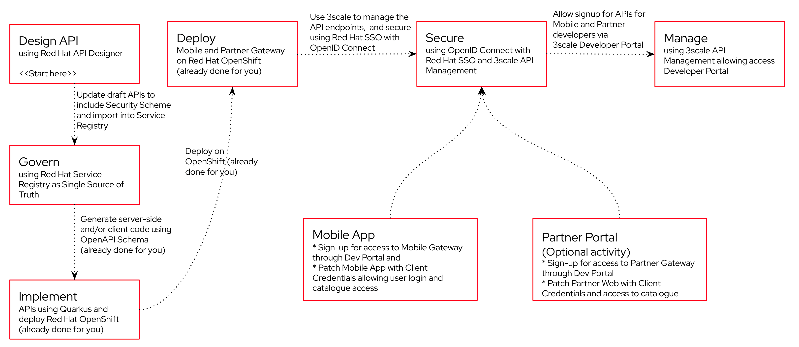 Figure 1. Activities overview 4. Red Hat SSO - An Introduction Red Hat SSO is used in this module to both offer single-sign on to Mobile users, and also for securing the APIs. We will be using OpenID Connect which is an open authentication protocol that works on top of the OAuth 2.0 framework. OIDC offers a discovery mechanism called OpenID Connect Discovery, where an OpenID server (here Red Hat SSO based on Keycloak) publishes its metadata at a well-known URL. This URL is typically a collection of various endpoints the server offers, some of which are used in this workshop too. Launch Red Hat SSO by clicking SSO Console and login using username and password (globex/openshift). Click on the OpenID Endpoint Configuration link to view the OpenID Provider Configuration of Red Hat SSO. Figure 2. Red Hat SSO - Logged In In case you see an error stating You don’t have access to the requested resource, you will need to logout, close the browser tab, and login again Click on Sign Out and close the browser Launch Red Hat SSO by clicking SSO Console and login using username and password (globex/openshift). Login as (globex/openshift). Here is how the OpenID Provider Configuration looks like 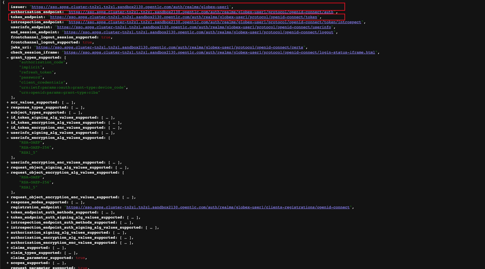 Figure 3. Red Hat SSO - OpenID Provider Configuration We are interested specifically in the following endpoints Endpoint URL OpenID Provider Configuration (well-known config): This URL provides a mechanism to discover the End-User’s OpenID Provider and obtain information needed to interact with it, including OpenID/OAuth endpoint locations. The following endpoints is fetched from this URL https://sso.%SUBDOMAIN%/auth/realms/globex/.well-known/openid-configuration issuer: This value is needed when we need to authorize a user through single sign-on https://sso.%SUBDOMAIN%/auth/realms/globex token_endpoint : clients can obtain access tokens from the server using this token endpoint and use these same tokens to access protected resources (APIs in our case) https://sso.%SUBDOMAIN%/auth/realms/globex/protocol/openid-connect/token 5. Design and Govern Mobile OpenAPI Specification In this step you will import the draft OpenAPI specs for Mobile App and edit them to include Security Schemes. Once the API design phase is complete you will then manage that within the Red Hat Service Registry. The API Designer sessions are stateless and you must save your API definition as a JSON file at the end of each session. 5.1. Section Goals Import a draft OpenAPI specification for Mobile App into an API Designer Edit the draft OpenAPI specification to add OpenID Security Schemes and include Red Hat SSO’s OpenID Provider Configuration Govern the Mobile OpenAPI with Red Hat Service Registry 5.2. Design Mobile OpenAPI To import the OpenAPI draft into API designer, you can import as text OR upload as file. To keep things simple in this workshop, you will import the content by simply pasting the draft spec as YAML based text into the API designer. In a real-world scenario you would do the inverse: start with an empty API specification, and define the different elements of the spec document. You would then export the spec in JSON or YAML format (by copying the contents from the source editor) to your local file system and push it to version control. Launch API Designer by clicking on this link API Designer Click on the New API button. Figure 4. Red Hat API Designer - New API Click on the Source Tab on the New API page, and delete the entire content in the window. Note: Keep this tab open. You will be pasting the draft OpenAPI into this window. 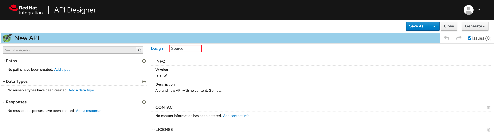 Figure 5. API Designer - Open Source Tab 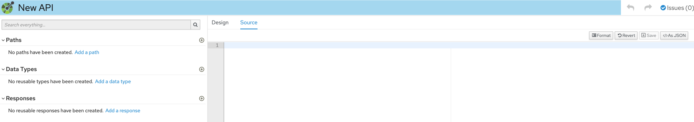 Figure 6. API Designer: Clear all content in Source Tab Fetch the draft API from the Mobile OpenAPI draft. Copy the entire contents from this file (Ctrl+A and Ctrl+C) Now paste the copied content (draft OpenAPI) from the above step into the API designer’s Source Tab replacing all of the existing content. Click on Save button as highlighted in the screenshot below. 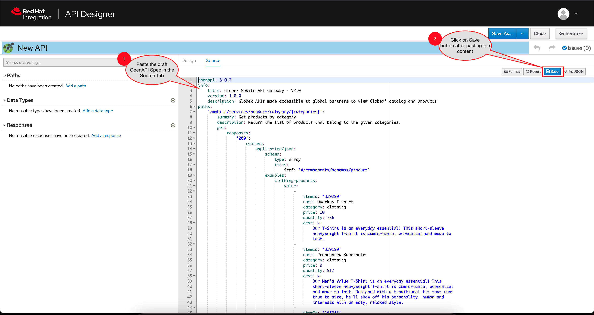 Figure 7. API Designer: Paste Mobile Draft OpenAPI Navigate back to the Design Tab Figure 8. API Designer: Design Tab You will now need to update the security scheme. Under the SECURITY SCHEMES section, click on Add a security scheme link 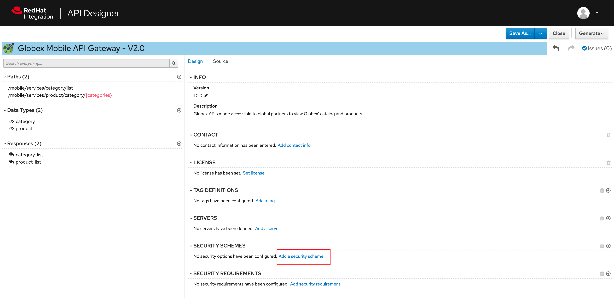 Figure 9. API Designer: Add a security scheme You are presented with the Define the Security Scheme page. Provide the following values in the form, and click on Save Name (textbox) openid-connect Description (textarea) OpenID Connect security scheme Security Type (dropdown) OpenID Connect OpenID Connect URL (textbox) https://sso.%SUBDOMAIN%/auth/realms/globex/.well-known/openid-configuration 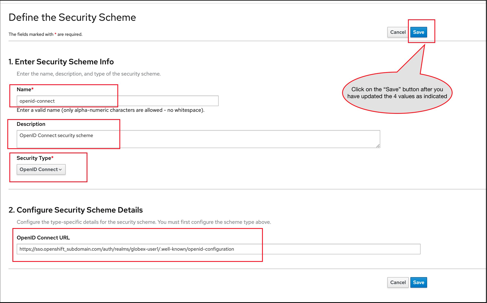 Figure 10. API Designer: Define the Security Scheme wizard You are navigated back to the homepage. Verify that you can see the SECURITY SCHEMES has been updated with your configuration 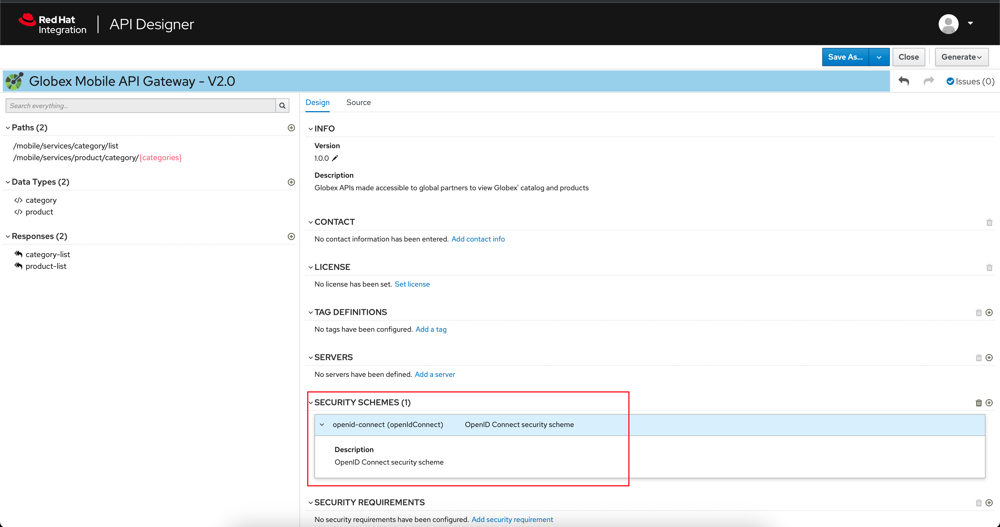 Figure 11. API Designer: Verify openid-connect Security Scheme added The OpenAPI specification is now ready to be downloaded. Click on the down arrow button adjacent to Save As.. and then choose Save as YAML button found on top-right of the page. The file gets saved automatically in the Downloads folder of your computer. Figure 12. API Designer: Save API as YAML in your computer You can now close this browser tab. The Mobile OpenAPI spec is ready to be governed with a Service Registry. 5.3. Manage the Mobile OpenAPI with Service Registry Launch Service Registry by accessing Service Registry Figure 13. Service Registry: Landing Page Click on the Upload artifact button as shown in the above screenshot. You will be presented with a Upload Artifact wizard Figure 14. Service Registry: Upload Artifact wizard In the wizard, enter the following details, and click on the Upload button. Use the exact same values as instructed below to avoid errors in the other sections of this labs. Group globex ID of the artifact mobileapi Artifact textarea Click on Browse.. button to upload the Mobile OpenAPI downloaded in the previous step, or Drag & drop the file into the textarea. 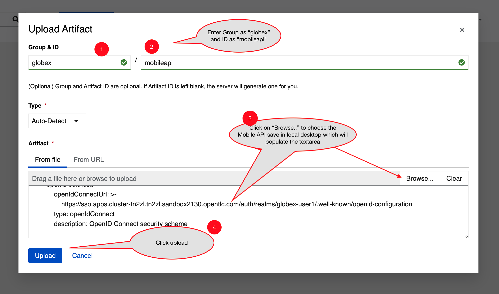 Figure 15. Service Registry: Provide information needed by Upload Artifact wizard and Upload Note that the Globex Mobile API Gateway artifact has been uploaded and stored within Service Registry 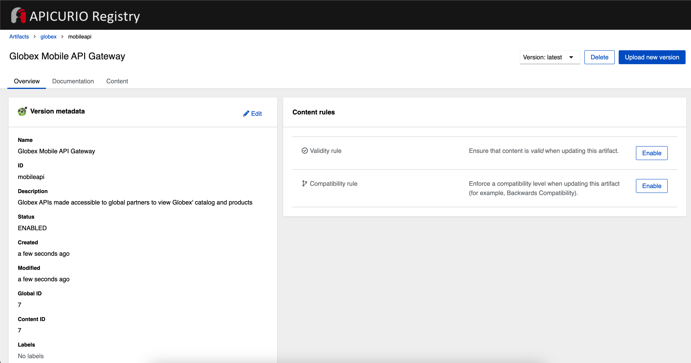 Figure 16. Service Registry: Globex Mobile API Gateway artifact has been uploaded You can share this OpenAPI schema with others via this OpenAPI Schema’s endpoint You can now close the Service Registry’s browser tab. This schema can be used for generating Quarkus code for both Clients and Server-side using maven plugins. (Note that the Globex Mobile App is NodeJS + Angular in this module) 5.4. Section Outcome Added Security Scheme to Mobile OpenAPI with API Desginers Imported the Mobile OpenAPI into Service Registry to govern the API spec. A shareable link is available to the Mobile OpenAPI specification to be used by other teams and systems. 5.5. Cleanup Please close the API Designer and Service Registry browser tabs (^‿^) to avoid too many browser tabs 6. Configure 3scale API Management to secure and manage Mobile Gateway API The Mobile API has now been designed in the API Designer, and is governed by Red Hat Build of Apicurios Registry. Let us fast forward a bit in time, and the backend developers team has built the Mobile Gateway server-side code built using Quarkus. This service has been pre-deployed under the globex-apim-user1 namespace on OpenShift. In this section you will manage and secure the Mobile Gateway API endpoints so that the Mobile App can access them securely. To create these API endpoints, and secure and manage them, we will need to configure them on 3scale API management. 6.1. Section Goals setup Red Hat SSO to provide single sign-on (SSO) capabilities for users signing into Mobile App setup Red Hat SSO to secure Mobile Gateway API endpoints using OpenID Connect manage Mobile Gateway APIs with Red Hat 3scale API Management access Red Hat 3scale API Management’s Developer Portal as a Mobile Developer to sign up for access of API 6.2. Red Hat SSO 3scale integrates with Red Hat SSO for authenticating the API requests using the OpenID Connect specification. On signing-up, External/Mobile developers will be provided with client credentialsto access to the APIs securely. This client credentials is synced between 3scale and the Red Hat Single Sign-On server using a component know an Zync In order to setup OpenID Connect, you will now create a special client id meant for Client Credentials Management Click to launch Red Hat SSO and login using username and password (globex/openshift). Click on Clients from the left-hand navigation. And, then click on the Create button on the right side as shown below Figure 17. Red Hat SSO: Clients listing In the Add Client wizard, enter the following details, and click on the Save button. Name Value Client Id client-manager Client Protocol (dropdown) openid-connect Figure 18. Red Hat SSO: Add Client wizard You will be shown the Settings tab of client-manager client. 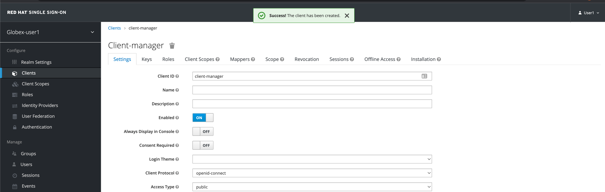 Figure 19. Red Hat SSO: View client-manager Settings Configure this client-manager as follows (refer to screenshot below) so that 3scale can synchronize with Red Hat SSO Change Access Type to Confidential Once the Access Types is Confidential you will see a new toggle button Service Accounts Enabled Keep Service Accounts Enabled as ON, and turn all other Grants and Flow OFF to match the following screenshot. This configuration allows only Services based access using Service Accounts, and will be used by 3scale API Management system in the next steps, when mobile users sign up for access. Service accounts provide a flexible way to control API access without sharing a regular user’s credentials. Figure 20. Red Hat SSO: Configure client-manager Click on Save button at the bottom of the page. You will be notified that the changes are saved successfully. 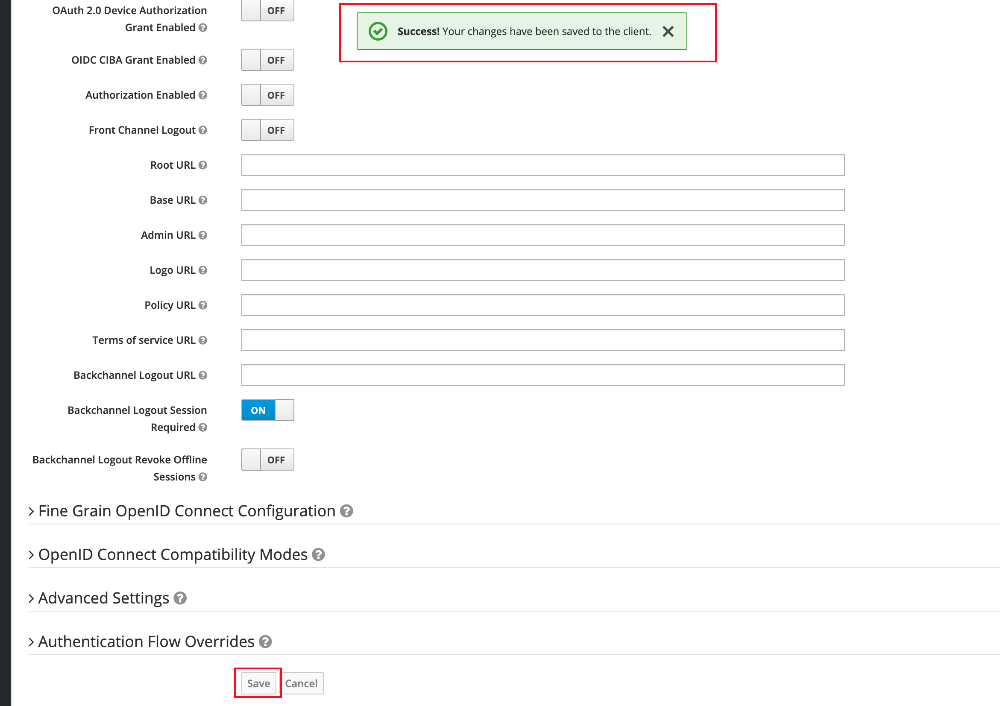 Figure 21. Red Hat SSO: Save client-manager settings Now you will need to setup Client Roles for this client id, so that it can manage other clients (create, amend and delete) on behalf of 3scale API Management Click on the Service Account Roles tab from the top tab navigation. From the Client Roles dropdown, choose realm-management 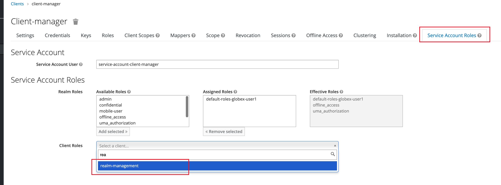 Figure 22. Red Hat SSO: setup Service Account Roles for client-manager in Service Account Roles tab From the Available Roles multichoice field, choose manage-clients, and click on Add selected >> button The mappings will get auto-saved. Figure 23. Red Hat SSO: Add manage-clients roles You can view the credentials of this client-id from the Credentials tab. You will need this when setting up the 3scale products Figure 24. Red Hat SSO: Client Credentials of client-manager 6.3. Create Mobile Gateway Backend, Product and ActiveDoc on 3scale To integrate and manage the Mobile Gateway API in 3scale, you need to create Products and Backend [Click to learn] What are Backend, Product, ActiveDocs and CRDs? In this workshop you will be using the 3scale Operator that creates and maintains 3scale on OpenShift with custom resource definitions (CRDs). 6.3.1. Create 3scale Backend for Mobile Gateway service To create the Backend for Mobile Gateway, you will need the Service URL of Mobile Gateway deployment running on OpenShift. [Click to learn] What is a Service From the OpenShift Console, click on the + button show on top-right corner of the portal as show below. Make sure that the project is selected is globex-apim-user1 Copy the content below and paste in the "Import YAML" form you opened in the previous step. This YAML is prefilled with the appropriate Service URL of the Mobile Gateway service How to fetch Service URL from OpenShift console? apiVersion: capabilities.3scale.net/v1beta1 kind: Backend metadata: name: globex-mobile-gateway-backend spec: name: "Globex Mobile Gateway Backend" systemName: "globex-mobile-gateway-backend" privateBaseURL: "http://globex-mobile-gateway.globex-apim-user1.svc.cluster.local:8080" providerAccountRef: name: 3scale-tenant-secret metrics: hits: description: Number of API hits friendlyName: Hits unit: "hit" mappingRules: - httpMethod: GET pattern: "/" increment: 1 metricMethodRef: hits Click the Create button Note that a Backed has been created. Under the Conditions Section note that Type, Synced has the Status as true 6.3.2. Create 3scale Product for MobileGateway API You will now create a 3scale Product, and also attach the Backend we created in the previous step to the Product. From the OpenShift Console, click on the + button show on top-right corner of the portal as show below. Make sure that the project is selected is globex-apim-user1 Copy the content below and paste in the "Import YAML" form you opened in the previous step. apiVersion: capabilities.3scale.net/v1beta1 kind: Product metadata: name: globex-mobile-gateway-product spec: name: "globex-mobile-gateway-product" systemName: "globex-mobile-gateway-product" providerAccountRef: name: 3scale-tenant-secret deployment: apicastHosted: authentication: oidc: issuerType: "keycloak" issuerEndpoint: "https://client-manager:[replace-client-credentials]@[replace-issuer-endpoint]" authenticationFlow: standardFlowEnabled: false implicitFlowEnabled: true serviceAccountsEnabled: true directAccessGrantsEnabled: false jwtClaimWithClientID: "azp" jwtClaimWithClientIDType: "plain" credentials: "headers" applicationPlans: basic: name: "Globex Basic Mobile Plan" setupFee: "0" published: true premium: name: "Globex Basic Premium Plan" setupFee: "100" published: true backendUsages: globex-mobile-gateway-backend: path: / In the Import YAML textarea, replace the placeholders [replace-client-credentials] and [replace-issuer-endpoint]. Update the 2 values as directed below. [replace-client-credentials] : Value of Client Credentials of the client-manager client you created in Red Hat SSO in the previous step. If you don’t have this value, click on Red Hat SSO Clients List. Login if needed with (user1/openshift). Click on the Client ID client-manager. You can copy the credentials from the Credentials tab [replace-issuer-endpoint] : Value as below sso.%SUBDOMAIN%/auth/realms/globex This URL is from Red Hat SSO’s Issuer endpoint from well-known configurations endpoint. 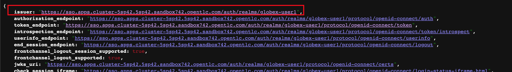 Figure 25. Red Hat SSO Issuer URL The YAML file should looks like this now Figure 26. mobile-gateway-product.yaml updated with the correct values Click the Create button. Note that a 3scale Product has been created. Under the Conditions Section note that Type, Synced has the Status as true 6.3.3. Create Active Doc for Mobile Gateway You will now create an Active Doc for the 3scale Product From the OpenShift Console, click on the + button show on top-right corner of the portal as show below. Make sure that the project is selected is globex-apim-user1 Copy the content below and paste in the "Import YAML" form you opened in the previous step. kind: ActiveDoc apiVersion: capabilities.3scale.net/v1beta1 metadata: name: mobile-gateway-activedoc spec: activeDocOpenAPIRef: url: "https://service-registry-apim.%SUBDOMAIN%/apis/registry/v2/groups/globex/artifacts/mobileapi" published: true name: mobile-gateway-activedoc providerAccountRef: name: 3scale-tenant-secret productSystemName: globex-mobile-gateway-product Click Create button. You can see that the Type under Conditions section Ready is marked as True. 6.4. Setup Mobile users The Mobile developers of Globex will need access to the Developer Portal to signup for the APIs exposed to them. Typically they would access the developer portal and signup for an account which need to go through an approval process For the purpose of this workshop let us setup a couple of users. From the OpenShift Console, click on the + button show on top-right corner of the portal as show below. Make sure that the project is selected is globex-apim-user1 Copy the content below and paste in the "Import YAML" form you opened in the previous step. apiVersion: v1 kind: Secret metadata: name: mobileuser.secret type: Opaque stringData: password: openshift --- apiVersion: capabilities.3scale.net/v1beta1 kind: DeveloperAccount metadata: name: mobile-developeraccount spec: orgName: GlobexMobile providerAccountRef: name: 3scale-tenant-secret --- apiVersion: capabilities.3scale.net/v1beta1 kind: DeveloperUser metadata: name: admin.mobile spec: username: admin.mobile email: admin@mobile.com passwordCredentialsRef: name: mobileuser.secret role: admin developerAccountRef: name: mobile-developeraccount providerAccountRef: name: 3scale-tenant-secret --- apiVersion: capabilities.3scale.net/v1beta1 kind: DeveloperUser metadata: name: dev.mobile spec: username: dev.mobile email: dev@globex.com passwordCredentialsRef: name: mobileuser.secret role: member developerAccountRef: name: mobile-developeraccount providerAccountRef: name: 3scale-tenant-secret You will be notified that the user resources have been created successfully 6.5. View the newly created Backend, Product, ActiveDoc and Users In this step you will view all the resources (Backend, Product, ActiveDoc and Users) that you’ve created so far on 3scale API Management. 6.5.1. View on 3scale admin console Navigate to the 3scale admin portal and login using your username and password (user1/openshift). You will notice that the Mobile Product and Backend have been created. Figure 27. Launch 3scale Click on globex-mobile-gateway-product under APIs → Products section. You are presented with the Product overview page for the Mobile API Product you created. Note the following elements Published Application Plans Application Plans define the different sets of access rights you might want to allow for consumers of your API. These can determine anything from rate limits, which methods or resources are accessible and which features are enabled Backend that has been attached to the Mobile Gateway Product Figure 28. Mobile Gateway Product: Overview Navigate to Integration → Settings page from the Product overview page. You will notice that the Product has been setup with OpenID Connect as Authentication mechanism client_manager client details that you had created in the previous steps. OIDC Authorization Flow includes Implicit Flow because we would be authenticating the users SSO as well access to the backend services 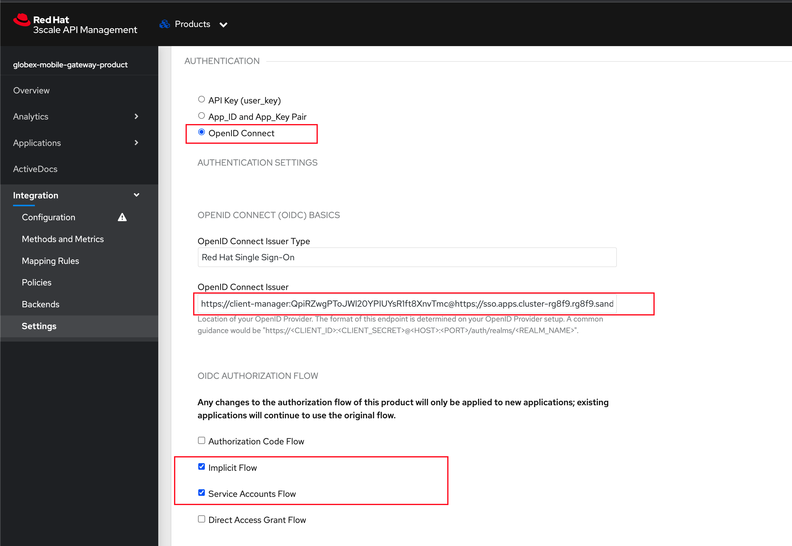 Figure 29. Mobile Gateway Product: Settings The ActiveDoc is visible from the 3scale portal as well under Products. Click on the ActiveDoc to preview the OpenAPI specifications. Figure 30. Mobile Gateway Product: ActiveDoc Navigate to Integration → Configuration and click on the Promote to v.x Staging APICast and then Promote to v.x Production APICast to promote all the config changes APIcast is an NGINX based API gateway used to integrate internal and external API services with the 3scale. APIcast can be hosted or self-managed. In this workshop we use the default self-managed option. Figure 31. Promote Staging and Production APICast 6.6. Setup Globex Dev Portal A good developer portal is a must have to assure adoption of your API. In this section we will setup the Dev Portal so that it is ready to be used by Mobile Developers. Navigate to 3scale’s Audience →Developer Portal → Settings by clicking on Settings → Domains & Access section The Developer Portal Access Code hides the site from the world till you are ready. Remove the value in the textfield below the label Developer Portal Access Code as shown below. Click on the Update Account button. This opens up the Developer Portal to public access without the need for an Access Code. Figure 32. Remove Developer Portal Access Code The next step is to allow a Developer to access Multiple APIs (Services) and signup for Multiple Applications Navigate to Developer Portal → Feature Visibility section Click on the Show button against the features Multiple Services and Multiple Applications. The changes are auto-saved. 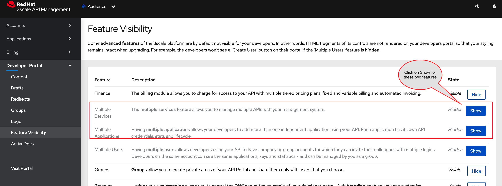 Figure 33. Feature Visibility section After updating the settings, this page should be seen as per the screenshot below. Figure 34. Feature Visibility settings altered The Globex Developer Portal is fully setup now for Mobile developers to signup. 6.7. Sign up as a Mobile Developer In this section you will login as a Mobile Developer (as the user you created in the previous section), and signup for API access Launch the Globex Developer Portal by clicking on Developer Portal Figure 35. Developer Portal Click on the SIGN IN link found on top-right. Sign in as one of the user you created in the previous section with username: dev.mobile password: openshift Figure 36. Developer Portal Navigate to Applications Listing by choosing the APPLICATIONS menu on the top of the page. Figure 37. Developer Portal Landing Page In the Applications page you are invited to Create Application. Click on the Create new application button seen against globex-mobile-gateway-product 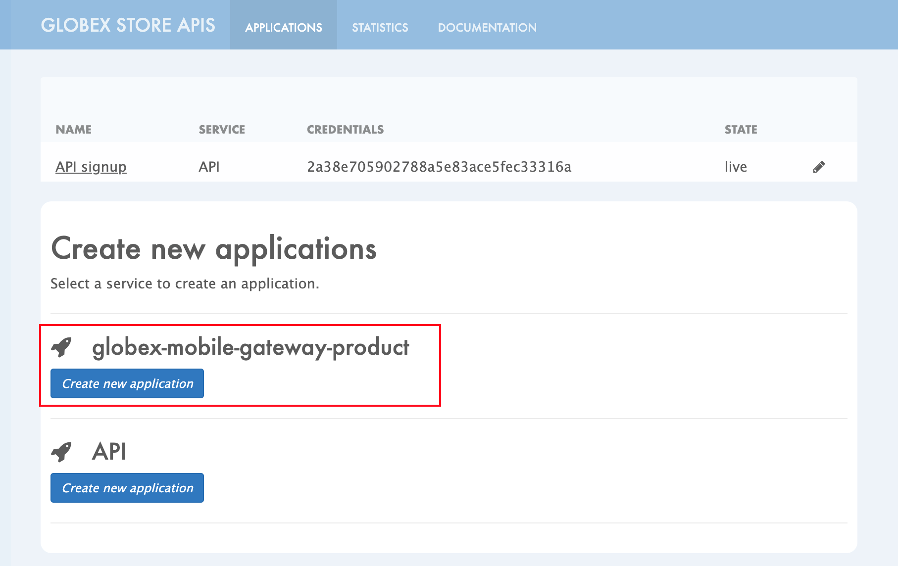 Figure 38. Developer Portal: Create new application Click on Subscribe to globex-mobile-gateway-product link Figure 39. Subscribe to globex-mobile-gateway-product You are successfully subscribed to the service Figure 40. Successfully subscribed to the service Navigate back to the APPLICATIONS tab found on the top menu and click globex-mobile-gateway-product’s > Create new application link Figure 41. Developer Portal: Create new application (again) Give the plan a Name and a Description and click on Create Application Figure 42. Developer Portal: New application An application is created successfully. Make a note of the Client ID and Client Secret. You will be using this in the Mobile App setup. Scratchpad can be used for this as well. Enter the value asterisk (*) in the REDIRECT URL field and click on the Submit button. This is to setup the right Redirect URL for OAuth using Red Hat SSO. In real-life you would never mark this as (*), but provide the correct URL based on your application. 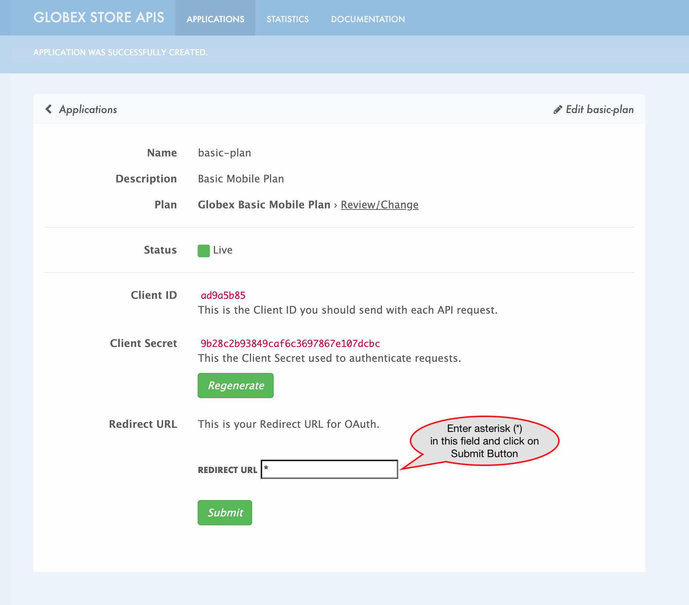 Figure 43. Update REDIRECT URL in the Application creates successfully for Mobile User Copy the Client ID from this page which will be used to setup Mobile App Navigate to OpenShift webconsole to the globex-apim namespace. The following parameters need to updated: API_CLIENT_ID Paste the Client ID from the Developer Portal against the API_CLIENT_ID variable with the Client ID the globex-mobile Deployment Details page. GLOBEX_MOBILE_GATEWAY Back in the Developer Portal Click on DOCUMENTATION navigation on the top of the page. The Documentation page displays all the available APIs including the default API as well as globex-mobile-gateway-product Figure 44. Dev Portal: Documentation Page Copy the URL displayed under "Service Endpoint" in globex-mobile-gateway-product box and paste it against the GLOBEX_MOBILE_GATEWAY variable. SSO_AUTHORITY and SSO_REDIRECT_LOGOUT_URI Paste the following values for the SSO_AUTHORITY and SSO_REDIRECT_LOGOUT_URI keys Field Value SSO_AUTHORITY https://sso.%SUBDOMAIN%/auth/realms/globex SSO_REDIRECT_LOGOUT_URI https://globex-mobile-globex-apim-user1.%SUBDOMAIN%/home Finally the the globex-mobile Deployment Details should look like this. Click on the Save button 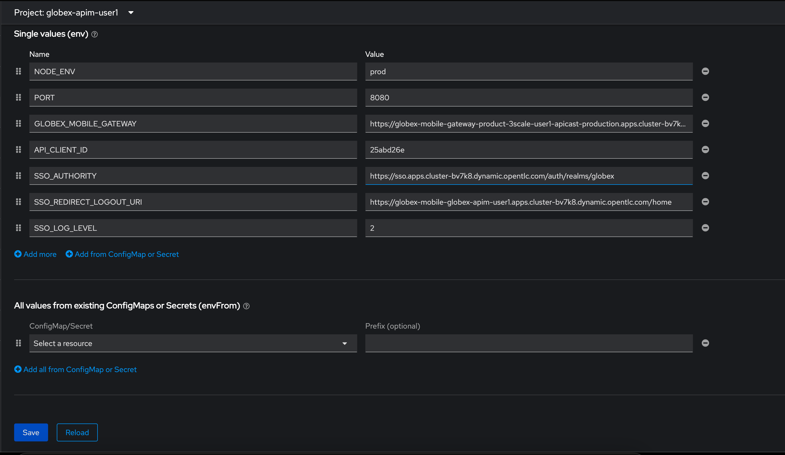 Figure 45. Fully updated mobile-env-patch file 6.7.1. Update Red Hat SSO’s Web Origin to match Mobile App There is one last step that you need to do before trying out the Mobile App. You need to update the Web Origin Navigate to click on Red Hat SSO Clients List. Login if needed with (globex/openshift). Figure 46. Red Hat SSO Clients List for Mobile client Click on the new Client ID that was created when you signed up for Mobile Gateway Application [Click to learn] Where do I find this Client ID? Close to the bottom of this page, you would see the Web Origins field. Update this field with the following value and click on Save https://globex-mobile-globex-apim-user1.%SUBDOMAIN% 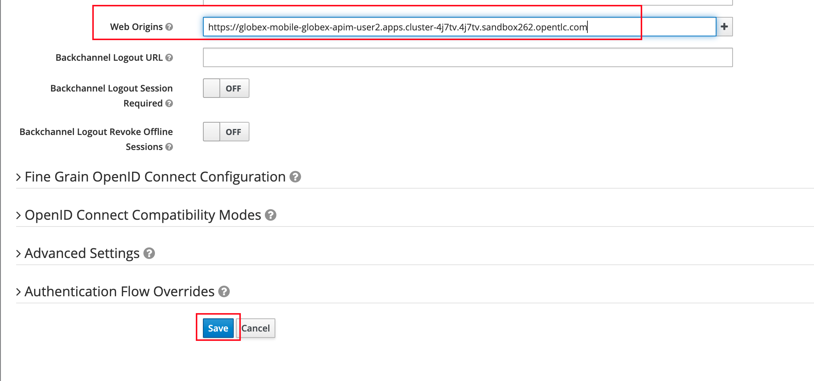 Figure 47. Update Web Origin in Red Hat SSO’s new Client ID, and click on Save. 6.8. Section Outcome 3scale Backend, Product, ActiveDocs and Users were created Developer Portal was setup for public access without Access Code Signed for an Application as a Mobile Developer Patched Red Hat SSO Web Origin so that the calls from Globex Mobile App will not cause errors 7. Test Mobile Application In the previous section, you signed up for access as a Mobile Developer and gained credentials to access the Globex Mobile Gateway API. In this section you will complete Mobile App configuration and test this out As part of this workshop, you will use a mobile-friendly Angular App and not a mobile-native app. So no mobile app installation is necessary. This Mobile App is work in progress and at present shows only categories and products within each category. Open this QR Code Link to view the QR Code and scan using your mobile phone to access the Mobile App Alternatively, open this URL in Incognito Mode to view Globex Mobile. This is to ensure that there is no clash with previous logins to RH-SSO. Click on Login, and login using (asilva/openshift) The login process may take a few seconds. Please wait for bit :) Figure 48. User is logged in After logging in, click on the View the categories button. You will view on a list of Categories available Figure 49. Categories view Click on the 'Clothing' category to view the Product Listing. Try out a few more categories too which will help us to generate some traffic to view in the Analytics section. 7.1. Analytics Navigate to the Globex Developer Portal Statistics From the dropdown indicated in this screenshot, choose the Mobile Gateway API’s application plan (which is basic-plan in this case). You will be presented with the statistics graph of the calls made to this gateway by the Partner Developer’s access. 7.2. Under the hood As part of this Section you tried out the Mobile App. The user asilva you logged into the Mobile App as, is authenticated using Red Hat SSO. Once the user logs in, a token is generated by Red Hat SSO using the Client ID, SSO Authority details that you passed to the Mobile App to setup the configuration This token is authenticated by 3scale to ensure the Client ID indeed has access to that particular API The token is also passed onto the backend service running on OpenShift, which checks for validity of the token. The REST endpoints is supplied with the SSO URL information as part of the application.properties The endpoints are protected with @Authenticated which in this case looks for a valid token being present. 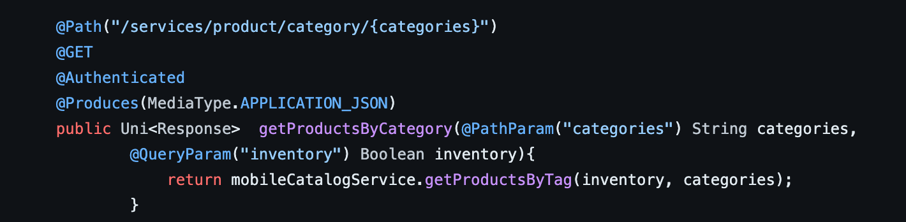 Figure 50. REST endpoint is annotated with @Authenticated With that we wrap up the activities Design, Govern, Manage, Secure Globex Mobile Gateway APIs for access from the Mobile Application securely. 8. Congratulations With this you have completed the Contract First API Advanced workshop! 2. Architecture 4. Developer Resources